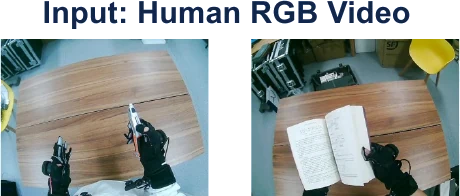
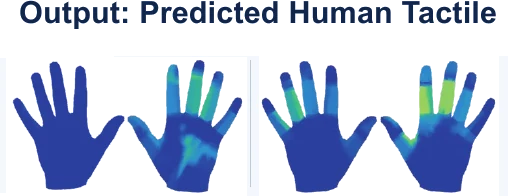
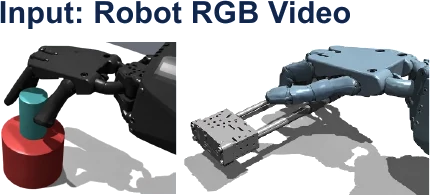
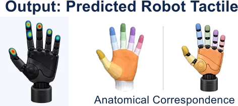
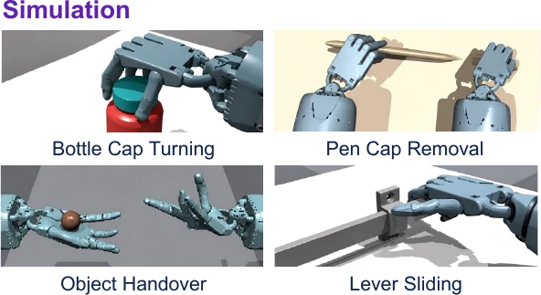
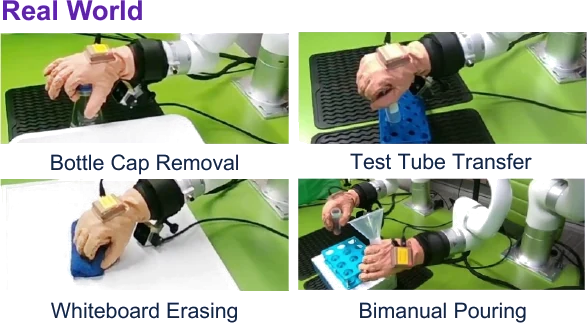

Ego2Contact in 30 seconds
From human touch to robot manipulation







A visual–tactile predictor is learned from paired human egocentric video and tactile measurements, fine-tuned to a dexterous robot hand through anatomical region correspondences, and used to supply touch for policy learning across four simulated and four real-world contact-rich tasks.